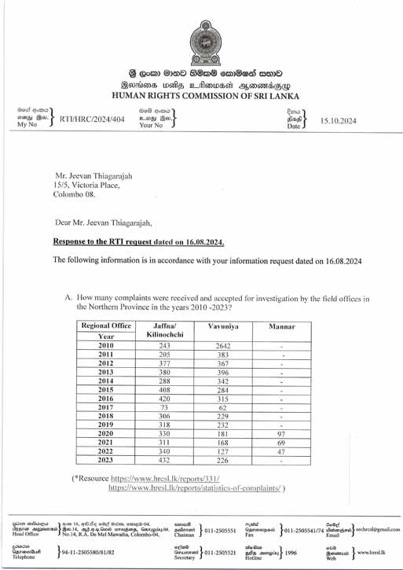
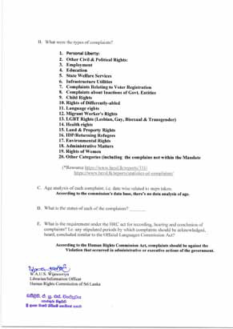

Human Rights and inhuman wrongs
Human Rights and inhuman wrongs
Jaffna Monitor hellojaffnamonitor@gmail.com 57 1. The graph below are statistics from the human rights commission of complaints received since 2010 in the Northern Province. The HRC though does not have an age analysis on the complaints. I.e. for recording, hearing and conclusion of' complaints. Types include: 1. Personal Liberty: 2. Other Civil & Political Rights: 3. Employment 4. Education 5. State Welfare Services 6. Infrastructure Utilities 7. Complaints Relating to Voter Registration 8. Complaints about Inactions of Govt. Entities 9. Child Rights 10. Rights of Differently-abled Human Rights and inhuman wrongs 11. Language rights 12. Migrant Workers Rights 13. LGBT Rights (Lesbian, Gay, Bisexual & Transgender) 14. Health rights 15. Land & Property Rights 16. IDP Returning Refugees 17. Environmental Rights 18. Administrative Matters 19. Rights of Women. There fundamentally must be a sense of urgency when addressing human rights abuses. Lack of oversight tracking defeats the essence of the enterprise.


Jaffna Monitor hellojaffnamonitor@gmail.com 58 3. Violation of citizens rights- Human Rights Report: Methsevena State House of Detention, Gangodawila, and Human Rights Report: Methsevena State House of Detention, Gangodawila, March and July 2004. Detention of Children-Presently 16 children younger than five years of age 27 are living in detention at Methsevena. Most of the children have no other guardian willing to care for them. Although it is preferable to keep young children with a parent, their rights are gravely violated when they are forced into detention. The children are negatively impacted because they lack access to a regular paediatrician, vital vaccinations, sanitary conditions and age-appropriate social interaction. Detention of Women with Mental Health Problems-Women with mental health problems live in a separate ward in the old building and receive monthly clinics conducted by Angoda Mental Hospital for the 73 women with psychological problems. Most of these women have been detained for non-punishable behaviours, listed as “mental illness,” “deaf,” “cripple” and “epilepsy.” The women with mental health problems, particularly the women with serious mental 2. Violation of the Constitution- The most well-known but sad abuse a of a right was the illegal removal and subsequent assumption for one day in office of the 47th Chief Justice no less, Dr. Shirani Bandaranayke. The Govt explained the reinstatement in this manner: Earlier in the day, President Maithripala Sirisena had issued two letters. One letter was dispatched to de facto Chief Justice Mohan Pieris. The other was issued to de jure Chief Justice Shirani Bandaranayke. In the letter to Pieris, President Sirisena said that his purported appointment had no legal validity and was therefore void. The letter said, there was no vacancy created for the position of Chief Justice because Shirani Bandaranayke was not removed in accordance with the terms of the constitutional provisions by an address of Parliament. Pieris was therefore asked to take note that he was not the lawful Chief Justice of Sri Lanka. The second letter to Bandaranayke was a copy of the first. It also included a covering letter, signed by President Sirisena, informing the ousted Chief Justice that Pieris had been informed that his appointment was void. The letter asked her to kindly resume duties as lawful Chief Justice of Sri Lanka. Copies of the letters were also issued to the Supreme Court Registrar. Govt. urged to reveal observations of indep. Panel (Daily Mirror 13/1/2013)’ It is learnt that the committee appointed to look into the charges against ousted Chief Justice Dr. Shirani Bandaranayke comprised Professor Mark Cooray, former Central Bank Deputy Governor Ranee Jayamaha, former Parliament Secretary General Dhammika Kithulegoda and Consortium of Humanitarian Agencies Chairman Jeevan Thiagarajah’. It is reliably learnt that certain panellists in their individual recommendations submitted to presidential secretary Lalith Weeratunge had expressed reservations of varying degrees on the charges. My view was carried in the Daily Ft on 14 th January 2015.
Jaffna Monitor
hellojaffnamonitor@gmail.com
59
illness, face specific problems in detention.
First, the psychiatric ward is plagued by the
worst living conditions in the facility. Most
women wear filthy, torn clothing. Small
rooms house up to twenty women, and many
are lacking bedding and lighting. Second,
the women lack necessary mental health
and medical services. A monthly clinic is
grossly inadequate to address the specific
issues faced by women with mental illness.
Third, the detainees with mental illness have
nothing to do. Most wander around the ward
or sleep. Fourth, the detainees with mental
health problems lack adequate supervision
because the institution does not provide a
regular supervisor in the psychiatric ward.
Instead, other detainees, unpaid for their
work, serve as caretakers for the women with
mental illness.
As a result of the surprise visits to
Methsevena State House of Detention,
Gangodawila, the Commission urges the
following: 1. immediately address the
problems associated with detention without
the proper court mandate, including no-date
detainees, detainees held after their sentence,
the refusal to release detainees without a
guardian and the detention of women who
have not committed punishable offences.
a. Resolve the discrepancy regarding the
definition of vagrant in the Vagrant’s
Ordinance and the Houses of Detention
Ordinance.
Note: The report catalogues horrendous
abuse of rights of vulnerable citizens. What
is required is penalties on those responsible,
payment of damages and restorative justice
for the victims. In this instance, it did not
occur even 10 years after the report!
4. Accountability for lapses leading
to death, injury and destruction to
property following Easter Sunday
Blasts in April 2019.
I write as a citizen. Triggered by the story
of Kieran Alexander Shafritz de Zoysa, an
eleven (11) year old boy who died in one of
the blasts and is half SL with a SL mother.
His profile is attached. 18th June 2019
a. The State is obliged to protect the life and
limb of its citizens whilst they also have
a reasonable expectation of protection of
their belongings. The 21st April blast we
know resulted in death and destruction.
Given information in the public domain
with malice to none has the Actg IGP and
/or National Police Commission sought
to inquire into responsibility within the
Police, lapses if any and consequences for
any lapses? If not why not?
b. Several days after the blasts organized
violence by mobs was seen directed at
Muslim owned properties. Has the Actg.
IGP and /or National Police Commission
sought to inquire into responsibility
within the Police, lapses if any and
consequences for any lapses? If not why
not?
c. Following from (a) and (b) were any
employee of the Police Department
obstructed from performing his/her duties
leading to the outcomes raised above and
if yes, what protection can or should be
provided to prevent recurrence? If not why
not?
Note: Submission drew no response from
the Chairman of HRC! Subsequently
we had a plethora of reports, cases and
determinations.
Jaffna Monitor hellojaffnamonitor@gmail.com 60 7. Continuous violation of rights
Letter of Governor to S/PSC
HRC regional coordinator submitted 35
observations on 2021.05.06 and the response
from NPC is pending. The Governor
withdraws forthwith the Charge sheet since
tenets of natural has been absent, noticed by
the PSC, and requires the Chief Secretary to
do so parallelly with the relevant line agency
with notice to …………within 7 days.
The Governor seeks the intervention of HRC
to lay suit and recover damages as deemed
necessary on behalf of………. The Governor
is of the view several senior officials
have colluded and acted in a monstrous
5. Innocent man suffered over
Kadirgamar assassination
I write with reference to a web-based article
seen attached titled, “Innocent man suffered
over Kadirgamar assassination “. The web
link is http://newshub.lk/en/2019/07/02/
innocent-man-suffered-over-kadirgamar-as
sassination/?fbclid=IwAR3yh7o7zZ3TSH
XB5mkRjb0Y7Y07reGgrbJVvYHfEjoH_
ixgGkYEODLrI34
Is it within the purview of the HRC to:
a. Go over the case record and potentially
seek compensation for the surviving
family members?
b. Define a method whereby prisoners
who are either in remand or have
been sentenced wrongfully are legally
protected?
Note: Eerie silence was the response of the
Chairman HRC!
6. Revisiting to remedy improprieties
in disciplinary inquiries
Matters under consideration of the first and
second preliminary inquiries are broadly
different. First report was not commissioned
or for the benefit of the (redacted). Hence
their satisfaction or dissatisfaction is
immaterial to conclude and act on the
first preliminary inquiry. Taking into
consideration (2-4) above, the process has
compromised the objectivity and legality of
both preliminary inquiries.
The first inquiry was out of time nor has
time been sought for extension nor a bar
from Court to proceed. Commencement
of a second preliminary inquiry against
the petitioner connecting it with the first
preliminary of the above mentioned whilst
the first remains without conclusion is
arbitrary and illegal on the face of law. The
Governor cannot prima facie knowingly
accede nor be party to breaking the law.
The Governor thus squashes the boards,
proceedings and findings of both preliminary
inquiry processes conducted under the aegis
of MoH, NP.
Note: The Secretary of the line ministry did
not act on the letter sent. The AG declined to
appear for the Governor since the findings
were different to instructions they had
received previously. The question thus is the
AG and the Governor legally bound to do
what is right or not?! The Governor chose to
do so.
Jaffna Monitor
hellojaffnamonitor@gmail.com
61
unaccountable manner in concert, at the
behest of one original complainant for
his personal interest. The report of the
HRC makes for horrendous reading on
account of the outrageous findings of
facts therein. The PSC should consider
imposing penalties on serving public
servants giving consideration to the
report of the HRC as well as docking the
pension in part as damages, if possible,
of those retired who acted in concert on
this matter.
The aggrieved party (redacted) must
recover her promotion rights.
The Chief Secretary preceding the
current office holder has acted in
an ugly, vindictive manner so has
potentially some members of the
incumbent N/PPSC. It must not be
repeated. It has brought total dishonor
on the Northern Provincial Public
Service which had in 1987 a scintillating
persona and should rise again to
become the gold standard in Provincial
Public Service.
This disgraceful episode the incumbent
Governor will stamp out forthwith,
whilst believing senior officials who
could have shown courage to do the
right thing had not done so to date.
The direction of the Governor is a
consequence of their inaction and
indecisiveness. Furthermore, grotesque
elements of misplaced male chauvinism
is found in the record on this matter.
Copy: 1. Chairman, Public Services
Commission; 2. Chairman- HRC; 3.
Chief Secretary- NPC; 4. DCS, Admin
NPC; 6. Mrs.(redacted)- Sri Lanka
Agriculture Service, Grade III; 7.
Regional Coordinator HRC- Mannar
Submission of the victim to Chairman /
HRC
The Human Rights Commission in inquiry
reference has in Paragraphs 6,7,8,9,10,11,12,
13,14,15,16,17,18,19,20,22,23,24,27,28,29,30
,31,32,33 and 34 made reference to the sum
total of victimization and harassment based on
personal prejudice tantamount to violation of
my fundamental rights.
The Hon. Governor independently has drawn
the conclusion that tenets of natural justice
were violated. Shown previously in Annex
I. Hence, he had forthwith withdrawn the
fabricated charge sheet prepared by the Chief
Secretary.
The HRC has in the conclusions of the inquiry
report found victimization based on personal
grounds by senior officials against me. The
Hon. Governor has withdrawn the Charge
sheet. Administrative Tribunal has accepted
the merits and content of the letter and
directions of the Hon. Governor. The PSC has
acted in violation of my fundamental rights by
reissuing the same charge sheet seen in Annex
II. I was thus victimized and tormented once
more for no reason. The PSC has acted on a
false set of documents produced by the NPC
where two senior officials have been named
as the principle offending parties, where their
inconsistencies and lies have been named and
exposed by the HRC. The Hon Governor has
requested HRC and the PSC to act against the
said officials. In fact, the PSC should act against
the said officials without victimizing me the
aggrieved party.
Note: The HRC concluded its inquiry in May
2021. To date no order has been made. The
details are replete with horrendous misconduct,
victimization, persecution and the continuous
violation of the rights of the victim. The HRC is
cognizant of the details since 2021.
Jaffna Monitor
hellojaffnamonitor@gmail.com
62
9. Availing of services of the HRC in
the Northern Province
The Governor wishes to propose a few
collaborative Suo moto inquiries in the
province if the Commission were to concur.
E.g. Involuntary warding of those mentally
ill, paucity of transport services by the SLTB
in particular for school children; With no
malice to employees its best staff rotate out
of stations every 5 years at the outer limit as
is the public service norm to ensure optimal,
swift delivery of services and relief where
required for complainants; The Governor
desires allocating plots of land to the poor
soon. Criteria to follow. Services of HRC to
adjudicate on the fairness or exclusion of any,
if such complaints were to be received would
assist immeasurably. Consideration is kindly
sought in principle for the above.
Note: The letter addressed to the Chairman
HRC drew no response!
8. Example of seeking Counsel from
the AG to remedy violations (Letter
from Governor to State Counsel)
Has the NP treated the complainant fairly
or unfairly? If not how so? As I understand
group of laborers struck work. Has the reason
been looked into, when, by whom, what was
the outcome, when? Did the right person
look into it? Why was Mrs. S. ……. brought
into the inquiry? Was that a correct decision?
PPSC directed she be temporarily attached
to another institution/post? Was she told or
not? If not why not? Did she not find only
through a RTI application? On what basis
did CLG appeal to PPSC? Should S/LG if
at all have done so or should Deputy Chief
Secretary Admin have done so? If errors
have been made to the detriment of the
complainant should the salary due during
the VOP be recovered from the DCS Admin
& CLG? Sick leave taken was incorrect.
Salary cannot be given for that period. Did
the appeal mechanism work fairly, on time
in this instance? PPSC had taken 3 decisions
on one individual. Should Governor call for
explanation? Are PPSC members personally
liable or immune from prosecution? I am
inclined to order payment of salary during
VOP if I can full justify it was wrong. Can
you assist with the above?
The scope of the advice tendered in the
directive principles to guide government
policy is wide ranging in nature. The
execution of the guide through policy is the
delivery of the promises to citizens by the
state through the Constitution.
In very many instances the execution and
delivery of justice falls far short of the
required level. Officers of the Government
need to be protected too if they are to act
without fear of repercussions. Organs of
government seem insufficiently sensitive,
become accessories to violations by default
due to inaction, seem enmeshed in actions
which preserve the status quo and lastly lets
down the state in its obligation to protect
citizens.
Conclusions